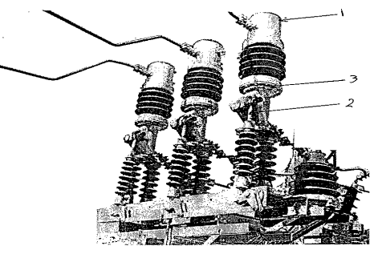
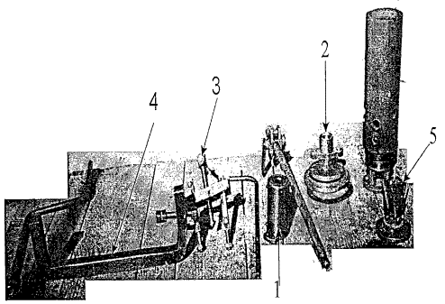
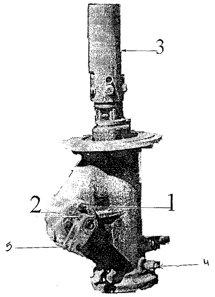
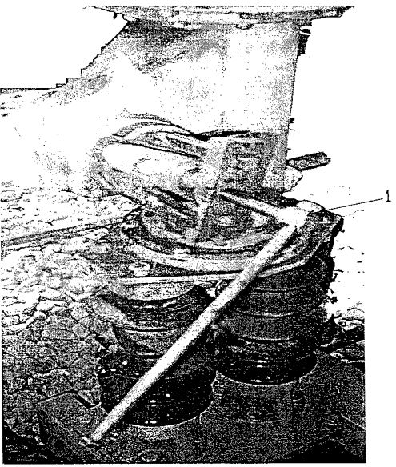
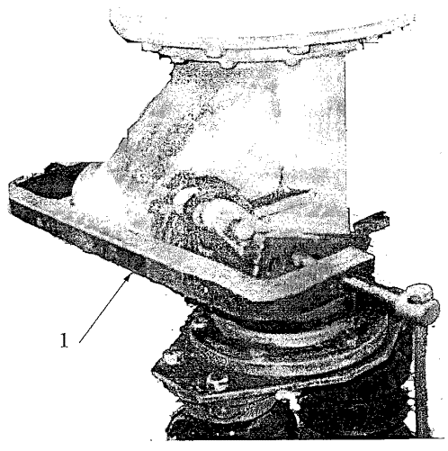
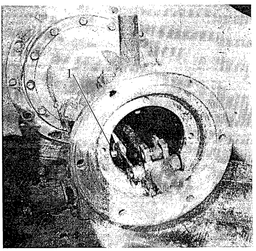

|
|
|
Minimum Oil Circuit Breaker 33kv
HPGE
ENERGOINVEST
Major Maintenance Procedures (P2-Y1)
|
|
|
|||
|
Equipment: Minimum Oil Circuit Breaker 33kv HPGE ENERGOINVEST |
Document No: CB-034-r0 | |||
|
Issued to:
|
||||
|
Status: |
||||
|
Procedure: Major Maintenance Procedures (P2-Y1) |
Approved Date: 23 Nov 1998 | |||
| Date to be Reviewed: Nov 2003 | ||||
Introduction
This procedure details the items, which are checked on an annual base (Y1). They include testing and major maintenance (P2). In addition to the procedures listed, it is expected the checks, which are done more frequently, would also be completed at this time.
A work permit must be issued.
The work area must be fenced with caution marks.
Disconnect DC voltage.
Wearing
safety helmet.
Use
only fiberglass ladder.
Personnel carrying out the maintenance should be trained and qualified or directly supervised by some one who is.
Environmental Recommendation
Do
not throw any oil into the sewage because the oil prevents the sewage
treatment process.
Collect the oil that drained out of the poles into a barrel and return it back to the vendor to recycle it to save money.
Collect the oil used in washing the poles in another barrel and do not re-use it for filling the poles unless filtered, dried and its dielectric strength measured with an oil tester (not less than 40 kV / 2.5 mm).
Do not burn cloth used in cleaning but collect it and send it to the dump.
Before working ensure the crane operator is fully aware of neighboring apparatus and the safe limits of approach to over head lines or bus bars.
The mobile crane must be grounded.
Do not use the mobile crane for the actual lift but attach a rope block and use the crane hook as a gin pole.
Mobile crane – Sufficient and suitable polypropylene rope to lower the arcing chamber and support insulator that covering the arcing chamber.
One set of open-end wrenches.
One set of screwdrivers.
Fine emery cloth.
Torque wrench.
Some of clean and dry cloth.
Benzene and Grease.
One barrel of new oil.
The special tools of CB.
Tin cans to hold bolts, nuts, studs, washers, …etc.
Inspection of the Came Oil Seal
Check for any oil leakage around the came and if there is a leakage of oil, the came oil seal has to be changed as follows:
Open the drainage oil- plug to drain the oil out of the CB in a suitable container.
Remove the cotter pin of the pin which fixing the came to the connecting rode (2fig.1) and pull the pin out.
Release the connecting rode (3 fig.1) down to the ground, and take care not to damage the porcelain of connecting rode.
Unscrew the screw that fixing the came to the came shaft (4 fig.1). Use spanner 14
Unscrew the 4 screws that fixing the flange of the came to the CB (2fig.3). Use spanner 19
Pullout the came with its flange using special clamp (1fig.5), (3 fig.2).
Pull out the old oil seal and clean its seat with benzene and fine emery cloth and lubricate it, and replace the old oil seal with new one.
Clean the came shaft using fine emery cloth and lubricate it.
Inspection of Fixed Contacts
Open the drainage oil- plug to drain the oil out of the CB in a suitable container.
Using
polypropylene rope to hang the arcing chamber with proper crane,
don’t use the mobile crane for the actual lift but attach a rope block and
use the crane hook as a gin pole.
Unscrew the 6 nuts (spanner 19) (1 fig.5) which connecting the arc chamber to its base
Raise up the arcing chamber and lower it aside on a wooden base and take it to the workshop for inspection.
Unscrew the 11 screws of the upper cover (1 fig.1) of the arcing chamber and pull it up.
Unscrew the 4 screws that fix the fixed contact to the arcing chamber (1 fig.2) using socket wrench 14 with long arm.
Pull the fixed contact up.
Inspect the fixed contact segments, if it is in a good condition it means that the moving contact is probably also in a good condition.
If its segments are slightly burnt it should be cleaned by a fine emery cloth.
If
it is burnt with punctures it means that both of the moving contact and
fixed contact are in a
bad condition their contact surface should be changed.
Clean the fixed contact with benzene and new oil.
Inspection of Moving Contact
Unscrew the 12 screws (sp.19) (5 fig.1)to release the arcing chamber insulator and pull it out.
Unscrews
the 4 screws (sp.14) to pull out the moving contact Bakelite cylinder (3
fig.3) and
sliding contacts (5 fig.3) inside the arcing chamber insulator.
To
release the moving contact shaft from the came at the lower part, turn over
the moving contact case
to see the moving contact from its base.
Unscrew the 4 screws (sp.17) that fix the moving contact seat (2 fig.2) to the moving contact case.
Pull out the moving contact seat and change its two gaskets.
Disconnect the 4 cotter pins which fixing the moving contact shaft with came rode (1 fig. 6).
Pull out the moving contact.
Clean all parts with fine emery cloth, benzene, and new oil.
Check
the moving contact head surface and clean it with fine emery cloth, benzene,
and new oil,
if it is burnt with puncture it has to be changed.
Reassemble
all parts to its original position and Reassemble the came with its flange
to its previous
position using special tool (1fig.4), (4 fig.2).
Screw
in the oil drainage plug again and refill the arcing chamber with new oil
from the upper plug and
drain it again from the lower plug for final cleaning.
Close the drainage plug again and refill with new oil from the upper plug to the correct level.
Perform timing and micro-ohm tests before putting the circuit breaker in service.
Record all that has been done in the maintenance card.
......................................................................................................................................................................................
Location: Equipment code:
Checked by: Date:
Signature:
| 
Figure 1 |
Figure 2

Figure 3

Figure 4


Figure 5
| 
Figure 6 |